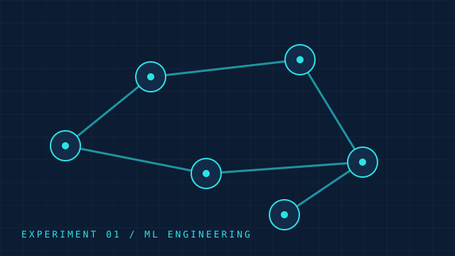
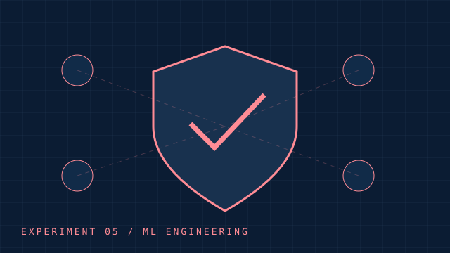

01MVP de pesquisa
Saneamento inteligente
Planejamento de expansão de redes com orçamento limitado.
Contexto de inspiraçãoANA · Águas Brasil · BiomaData
Agentes, busca em árvores e self-play.
2 projetos

01Planejamento de expansão de redes com orçamento limitado.
Contexto de inspiraçãoANA · Águas Brasil · BiomaData

05Jogo abstrato entre agentes de ataque e defesa.
Contexto de inspiraçãoSenhaSegura · Protege